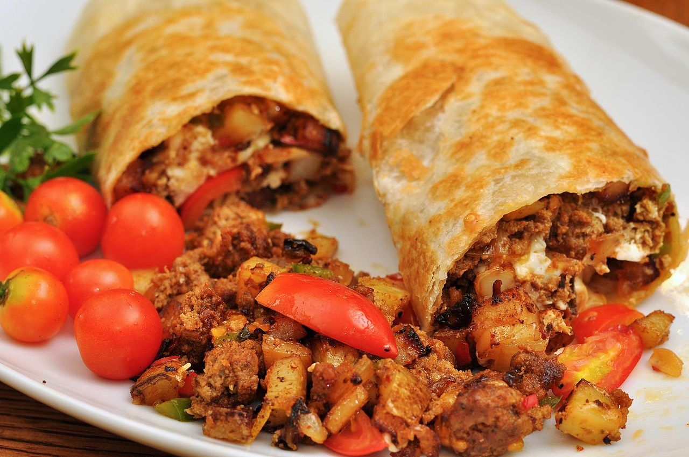

Vegetarian Burritos Recipe

Easy Burritos Recipe!
"A day in which we have not eaten these burritos is a day in which we have not lived!" ~ Friedrich Nietzsche, probably, but only if he had eaten these burritos. Seriously though, they take minimal effort, they're preppable, and they give you a great pick-me-up in the middle of a hard workday. Try this recipe!
Ingredients
- Six red potatoes
- One medium-sized onion (red or white is fine)
- One bell pepper (red or yellow)
- Black Beans (organic Kroger brand are the best)
- Vegenaise
- Shredded Cheese (mozzarella and taco blends are good)
- Four large tortillas
- Olive Oil
- Salt
Steps
- Preheat oven to 440 Degrees Fahrenheit
- Dice six red potatoes into one-inch cubes
- Cover diced potatoes in oil and salt liberally
- Bake potatoes at 440 Degrees for 35 minutes, turning them at 20 minutes
- Wash, drain, and heat one can of black beans.
- Preheat large nonstick frying pan and add oil
- Roughly dice pepper and onion, then add to hot frying pan. Sautee for 10 minutes or until brown.
- Set out four large tortillas; apply vegenaise and add shredded cheese.
- When potatoes, beans, peppers and onions are done, add them to the burritos.
- Re-heat and oil the frying pan. When burritos are wrapped, brown them in the frying pan for about 3 minutes per side.
- Enjoy them burritos!